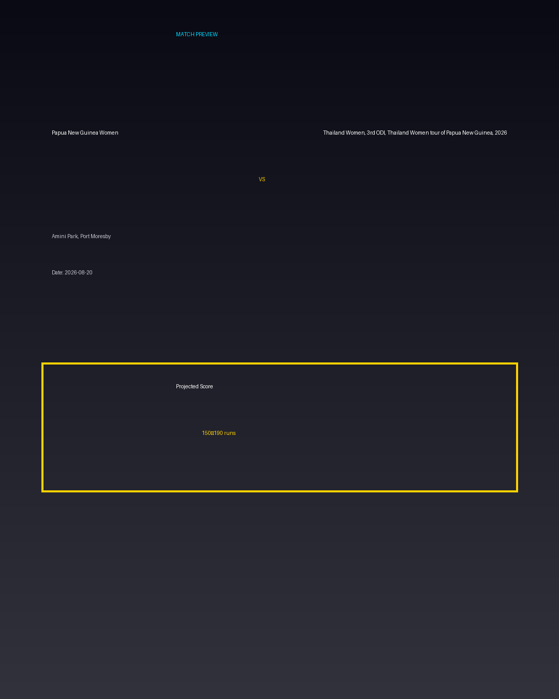

Papua New Guinea Women vs Thailand Women, 3rd ODI, Thailand Women tour of Papua New Guinea, 2026
Date: 2026-08-20
Venue: Amini Park, Port Moresby


Form Guide
Papua New Guinea Women: 🟩 🟥 🟩 🟩 🟥
Thailand Women, 3rd ODI, Thailand Women tour of Papua New Guinea, 2026: 🟥 🟩 🟥 🟥 🟩
Pitch Report
Balanced wicket with moderate scoring conditions.
Projected Score
150–190 runs
Key Players
- Papua New Guinea Women Key Batter — Batsman
- Papua New Guinea Women Strike Bowler — Bowler
- Thailand Women, 3rd ODI, Thailand Women tour of Papua New Guinea, 2026 Key Batter — Batsman
- Thailand Women, 3rd ODI, Thailand Women tour of Papua New Guinea, 2026 Strike Bowler — Bowler
Advanced Win Probability
Papua New Guinea Women: 64.3%
Thailand Women, 3rd ODI, Thailand Women tour of Papua New Guinea, 2026: 35.7%
AI Match Prediction
Based on venue conditions, a projected scoring range of 150–190 runs, recent form (with Papua New Guinea Women appearing slightly stronger), and the pitch profile ('Balanced wicket with moderate scoring conditions.'), this matchup appears to present Papua New Guinea Women entering as clear favorites. Early momentum and top-order execution will likely determine the winner.
